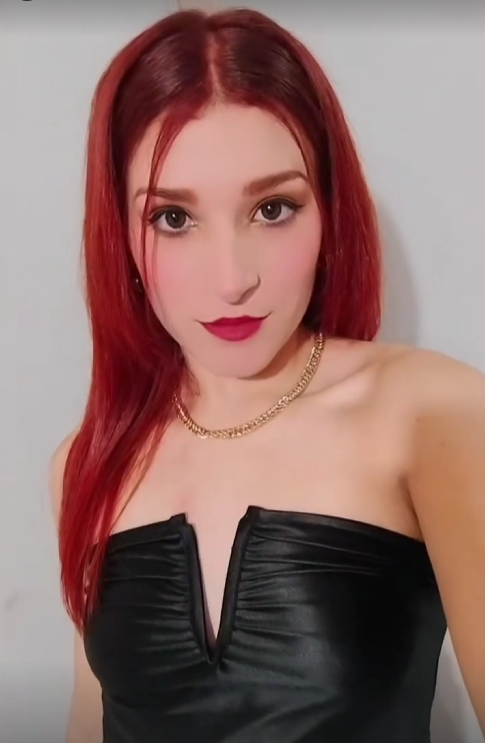

Buenos Aires, 10 de Octubre de 2024
A la Srta.Micaela Soledad Ibañez:
Un 10 de octubre de 1998, a las 17:58, en la noble tierra de amor y venganza, vio la luz del mundo una artista implacable, destinada a transformar cada rincón de su vida con la pasión y la belleza que solo los espíritus grandes pueden irradiar. La historia, aunque aún incipiente en aquel momento, prometía el florecimiento de una mujer que sería tan hermosa como brillante, y cuya intensidad de carácter desafiaría todas las expectativas.
Sin saberlo, el destino —ese arquitecto inescrutable— orquestaba ya nuestro encuentro; uniendo mi vida a la suya en un suspiro que, aunque inesperado, sería tan fuerte y definitivo, como un vuelo sin escalas hacia el corazón de una selva tan cerrada como intrigante.
Recuerdo ese instante en que nuestras miradas se cruzaron por primera vez en aquel lugar que, en su atmósfera envolvente, resplandecía de un rosa similar al tono de su piel, más precisamente al tono suave de su pezón (JAJAJAJAJA). Fue un momento que cautivó mis sentidos; no solo por el color (?), sino por la conexión inmediata que sentí en el aire, ¿Lo estaba soñando? ¿Estaba realmente frente a la mujer que iba a ocupar aquel lugar tan especial para mí? ¿El baño estaba ocupado? fueron algunos de los interrogantes que tuve en ese momento. Allí, me dejé llevar por la magia del momento, mientras observaba cómo, con una gracia inigualable, se sumergía en el placer de compartir una botella de vino, pero ésta vez, con ella misma. Ver cómo se deleitaba en la esencia de aquella botella llamada 'La linda', cuyo nombre no podía ser más adecuado para describir lo que siempre fue. En unas pocas horas, con ayuda de las voces, la botella se vació. En ese gesto vi la profundidad de su ser, como si con cada trago absorviera el nectar de la vida misma. Ese acto resonó profundamente en mí, como un preludio inevitable a la sinfonía de amor que estaba a punto de desatarse entre nosotros.
Y antes de dar ese paso hacia lo desconocido, le entregué un regalo: un collar que tenía una piedra chiquita de cristal, frágil, pero que brillaba intensamente, como lo hacía ella en cada instante. En ese destello, vi reflejada la singularidad de su ser, con una joya que, al igual que su persona, deslumbraba en su autenticidad y encanto.
Y en el acto siguiente, mientras los cuerpos de dos meretrices se entrelazaban, comprendí de manera irrefutable que era la elegida. La forma en que cada gesto suyo se entrelazó con el mío, esa conexión que parecía trascender el tiempo y el espacio, me hizo sentir que había perdido años de vida sin ella. En ese instante, todas las dudas se desvanecieron, y la certeza del amor que comenzaba a florecer en nuestros corazones iluminó el camino hacia un futuro compartido. Aunque esos corazones laten a un ritmo irregular, casi como si fueran un reloj al que alguien arrojó de un 10mo piso, cuando estamos juntos esos latidos se sincronizan, encontrando un tempo perfecto, una melodía única que solo ella y yo podemos crear y reproducir."
Ella sos vos, la actual mujer de mi vida. Y sin titubear, puedo decir que una de las cosas que más me cautiva de vos, Micaela, es tu asombrosa inteligencia. Tu capacidad de ver el mundo a través de un prisma de conocimientos y matices es una maravilla que admiro profundamente. En cada conversación, me sorprendes con tus ideas brillantes (como la vez que me dijiste que querias hacer una función de trapesista con una vela encendida metida en ese orificio tan peculiar que suelen denominar 'ano'), desafiando mis pensamientos y expandiendo mis horizontes. No puedo evitar sentirme afortunado al compartir mi vida con una mente tan prodigiosa, que no solo entiende el arte y la belleza, sino que también desentraña las complejidades de la vida con una claridad inigualable.
Admiro cada parte de tu ser. Todo lo que puedas imaginar y más. Tus ojos tan expresivos y profundos, tu risa, tu sabiduría, tu demencia cuasi-senil… Quiero ser el refugio donde puedas encontrar paz y la motivación para seguir brillando. A menudo me pregunto si este amor tan intenso y verdadero será suficiente para abarcar todo lo que anhelo. Sin embargo, mi corazón late con la fuerza de mil camellos sedientos en la mitad de un desierto desolado, por vos, y ante la idea de construir un futuro juntos.
Y, aunque la vida puede ser un escenario dramático donde los giros del destino son inevitables, quiero que sepas que cada desafío que enfrentemos lo haré a tu lado, siempre dispuesto a luchar por nuestra felicidad y la de nuestro bebé (Si, no te dije, pero estoy embarazado). Te prometo que nunca permitiré que las voces se interpongan entre nosotros.
Si bien las palabras pueden parecer insuficientes para expresar la magnitud de lo que siento, te dejo esta carta como testimonio de que cada escena de vida que compartimos, quedará eternamente grabada en mi corazón. Con vos aprendi verdaderamente lo que es amar.
Con todo mi amor y devoción,
Martín Ignacio Fernández
Comando Nacional del Partido '19cm'